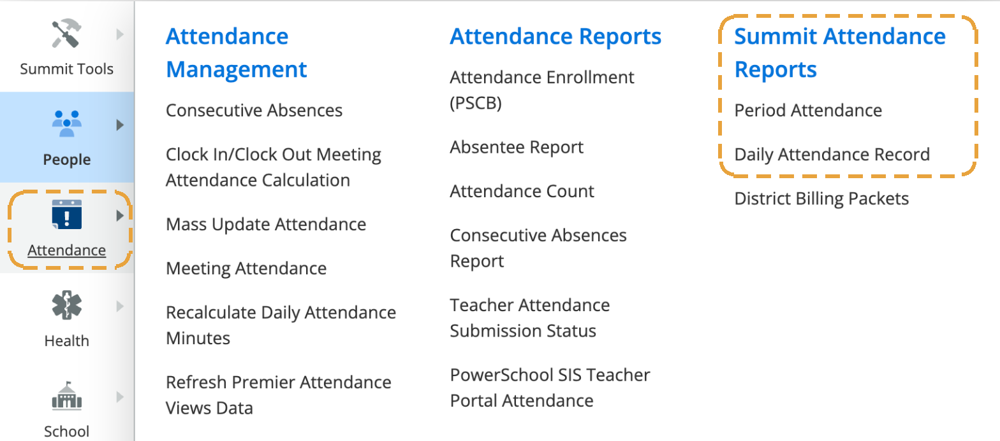
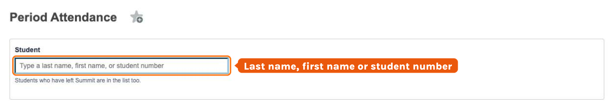
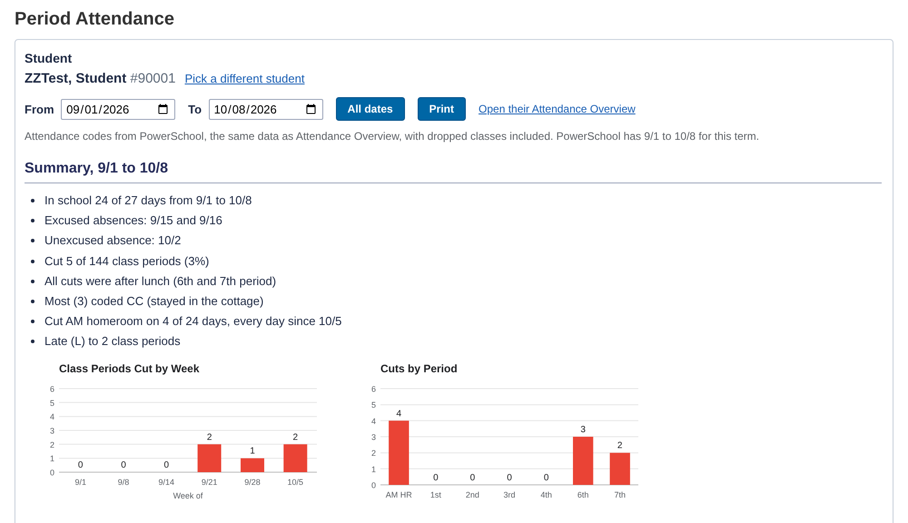
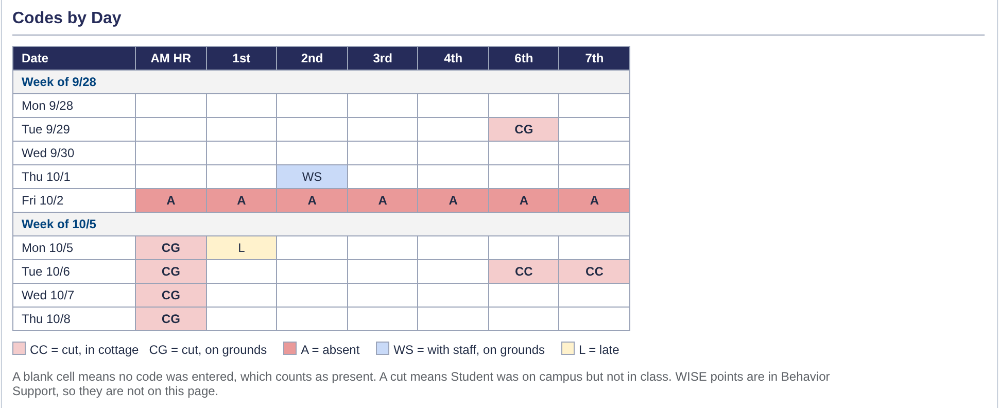
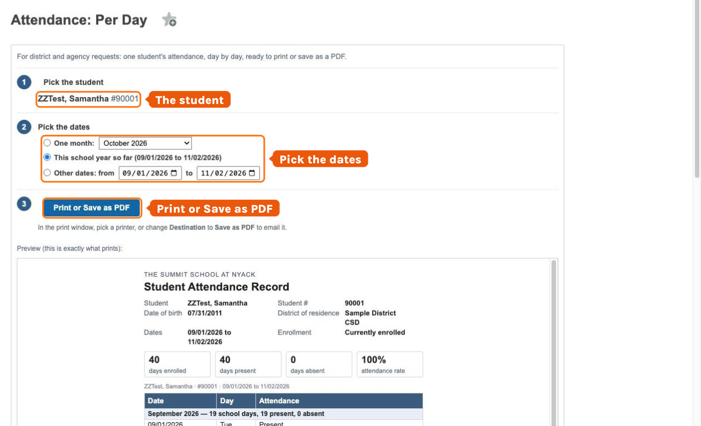
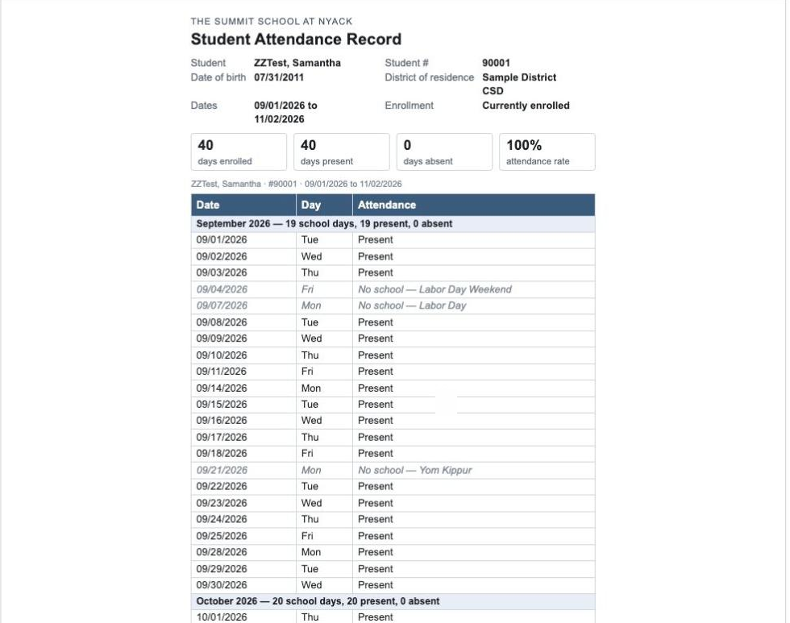

Two Summit reports in the Attendance menu
Both live in the left menu under Attendance → Summit Attendance Reports. Both are look-and-print only — nothing on either page changes attendance.
Every period, every day. The code for every school day and every period (AM homeroom, 1st–4th, 6th, 7th), with the cuts counted for you and two charts. Use it to spot a pattern — before a meeting, a call home or a team check-in.
Who uses it: social workers, counselors, coordinators. Teachers have the same screen in PowerTeacher.
Present / Absent, to send. One line per school day with month subtotals, no-school days and totals, ready to print or save as a PDF. Built for district and agency requests: one month, the school year so far, or any dates.
Who uses it: Summit's executive assistant, or whoever gets the request. Teachers have it too.
Attendance → Summit Attendance Reports → Attendance: Per Period
- 1In the left menu, click Attendance.
- 2In the third column, Summit Attendance Reports, click Attendance: Per Period.

Pick the student
- 1Type a last name, first name or student number in the box and click the student.
- 2Students who have left Summit are in the list too.
- 3Wrong one? Click Pick a different student.

Read the Summary and the two charts
It opens on the whole term so far.
- The Summary says it in a few lines: days in school, absences, cuts and when they happen, CC (stayed in the cottage) vs CG (on campus, not in class), AM homeroom cuts and lates.
- The charts show cuts by week and cuts by period.
- Change From / To for a stretch — All dates puts it back. Print prints just the report; Open their Attendance Overview opens PowerSchool's own page.

Read Codes by Day
One row per school day, grouped by week, and one column per period: AM HR, 1st–4th, 6th, 7th (no 5th — that's lunch).
A blank box = no code entered, which counts as present. A dash = not in that class yet.

Read the Comments column
- 1A comment typed in with an attendance code shows in the Comments column at the right of that day's row, labeled with the period — 3rd: 15 min late, say.
- 2The box itself gets a small blue dot; rest your mouse on it to read the comment. No dot, no comment.
Attendance → Summit Attendance Reports → Attendance: Per Day
- 1Same menu, one line down: Attendance → Summit Attendance Reports → Attendance: Per Day.
Pick the student, then the dates
- 1Type a last name, first name or student number and click the student.
- 2Pick the dates: One month (choose it from the list), This school year so far, or Other dates (from / to).
- 3Since they started only shows up for students who started before this school year.

Check the yellow box before you send
- 1If a yellow Before you send box shows up, look at those days first — for example a day counted Present when no attendance was entered, or Present only because of OC or WORK.
- 2A day is wrong? Reach out to fix it.
- 3Present/Absent updates overnight, so print it again tomorrow.
Print or Save as PDF
- 1The preview under the steps is exactly what prints: Student Attendance Record with the name, student #, date of birth, district of residence, totals and every school day.
- 2Click Print or Save as PDF.
- 3In the print window, pick a printer — or change Destination to Save as PDF to email it.
